<!-- .slide: data-auto-animate-restart --> # Comparison of effects of peripheral vasculature on tonometric radial pulse and cuff-based brachial pulse waveform as used in estimation of central aortic pressures ##### Mark Butlin, Isabella Tan, Ahmad Qasem, Alberto P Avolio <img src="images/BPAF_logo_and_name_black.webp" height="60px" align="left" style="padding-top:30px; padding-bottom:30px" alt="Blood Pressure and Arterial Function (BPAF) Laboratory logo"> <img src="images/logo_MQ_INT_HOR_RGB_POS.png" height="60px" align="right" alt="Macquarie University crest" style="padding-top:30px; padding-bottom:30px"> <p> </p> <p> </p> <p class="citation"> <br>IEEE EMBS 2023<br>25th July 2023</p> -- ##### Mark Butlin, Isabella Tan, Ahmad Qasem, Alberto P Avolio <img src="images/BPAF_logo_and_name_black.webp" height="60px" align="left" style="padding-top:30px; padding-bottom:30px" alt="Blood Pressure and Arterial Function (BPAF) Laboratory logo"> <img src="images/logo_MQ_INT_HOR_RGB_POS.png" height="60px" align="right" alt="Macquarie University crest" style="padding-top:30px; padding-bottom:30px"> <br> <br> <br> <br> <h5>Disclosures</h5> <div class="container"> <div class="col"> <p>CardieX AtCor Medical</p> <ul> <li>funding research assistant in BPAF Laboratory.</li> <li>past contract research.</li> <li>Ahmad Qasem employee of CardieX.</li> </ul> </div> <div class="col"> <p>Past collaborative efforts (unfunded) with:</p> <ul> <li>Blumio</li> <li>Fledge Innovation Laboratories</li> </ul> </div> </div> -- ### We can estimate aortic blood pressure parameters #### from the peripheral pulse 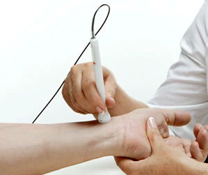 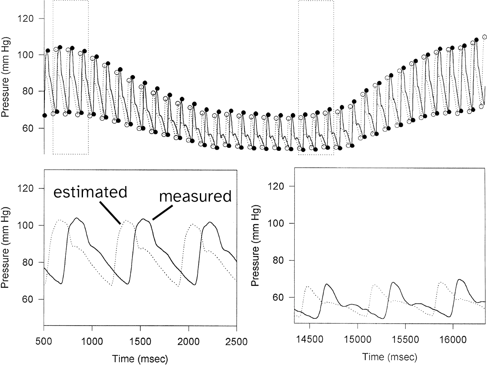 <p class="citation">CChen, C. H.; Nevo, E.; Fetics, B.; Pak, P. H.; Yin, F. C.; Maughan, W. L.; Kass, D. A. Estimation of Central Aortic Pressure Waveform by Mathematical Transformation of Radial Tonometry Pressure. Validation of Generalized Transfer Function. Circulation 1997, 95 (7), 1827–1836. doi:<a href="https://doi.org/10.1161/01.cir.95.7.1827">10.1161/01.cir.95.7.1827</a></p> -- ### The peripheral pulse waveform can be changed independent of systemic blood pressure #### <img src="images/pixlr_woman_hospital_winter.webp" width="33%"> <p class="citation"><a href="https:\\www.neurologyadvisor.com">www.neurologyadvisor.com</a><br> Generated by <a href="https://pixlr.com">pixlr.com</a></p> -- <!-- .slide: data-background="#373A36" --> <p style="color:white;font-size:1.5em">Does altering the peripheral pulse<br>(independent of blood pressure)<br>incorrectly alter the estimation of<br>aortic pressure parameters?</p> -- <!-- .slide: data-background-image="images/hand_cuff.webp" data-background-size="66%" data-background-position="right" --> ### Altering the peripheral pulse #### Cuff around the hand inflated to: - 60 mmHg above MAP - 30 mmHg above MAP - 15 mmHg above MAP - MAP - 15 mmHg below MAP - 30 mmHg below MAP <p class="citation"> <br>MAP: mean brachial arterial pressure.</p> -- ### Sites of peripheral pulse measurement #### <div class="container"> <div class="col"> brachial 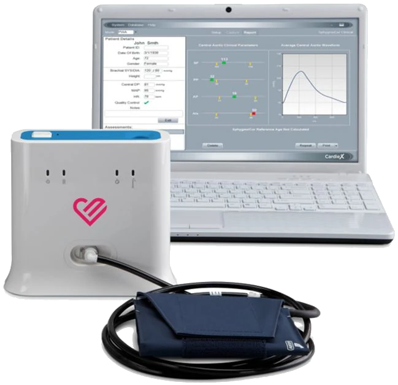 </div> <div class="col"> radial<br> </div> </div> -- ### Software to apply generalised transfer function #### <table style="font-size:x-large"> <tr> <th>peripheral waveform</th> <th></th> <th>generalised transfer function</th> <th></th> <th></th> </tr> <tr> <td>brachial</td> <td>→</td> <td>SphygmoCor XCEL</td> <td>→</td> <td>aortic waveform</td> </tr> <tr> <td>radial</td> <td>→</td> <td>SphygmoCor CvMS</td> <td>→</td> <td>aortic waveform</td> </tr> </table> -- ### Demographics #### (n=20, 7 female) <table style="font-size:x-large"> <tr> <th>parameter</th><th>mean±SD</th><th>minimum</th><th>maximum</th> </tr><tr> <td>age (years) </td><td>37±15</td><td>20</td><td>65</td> </tr><tr> <td>height (cm) </td><td>173±12</td><td>155</td><td>194</td> </tr><tr> <td>weight (kg) </td><td>66±8</td><td>53</td><td>81</td> </tr><tr> <td>body mass index (kg/m<sup>2</sup>) </td><td>22±2</td><td>17</td><td>26</td> </tr><tr> <td>seated systolic blood pressure (mmHg)</td><td>115±10</td><td>103</td><td>135</td> </tr><tr> <td>seated mean blood pressure (mmHg)</td><td>87±6</td><td>77</td><td>101</td> </tr><tr> <td>seated diastolic blood pressure (mmHg)</td><td>71±6</td><td>60</td><td>81</td> </tr><tr> <td>heart rate (bpm)</td><td>67±11</td><td>48</td><td>83</td> </tr> </table> -- ### Results. Experiment control #### Average systemic blood pressure did not change 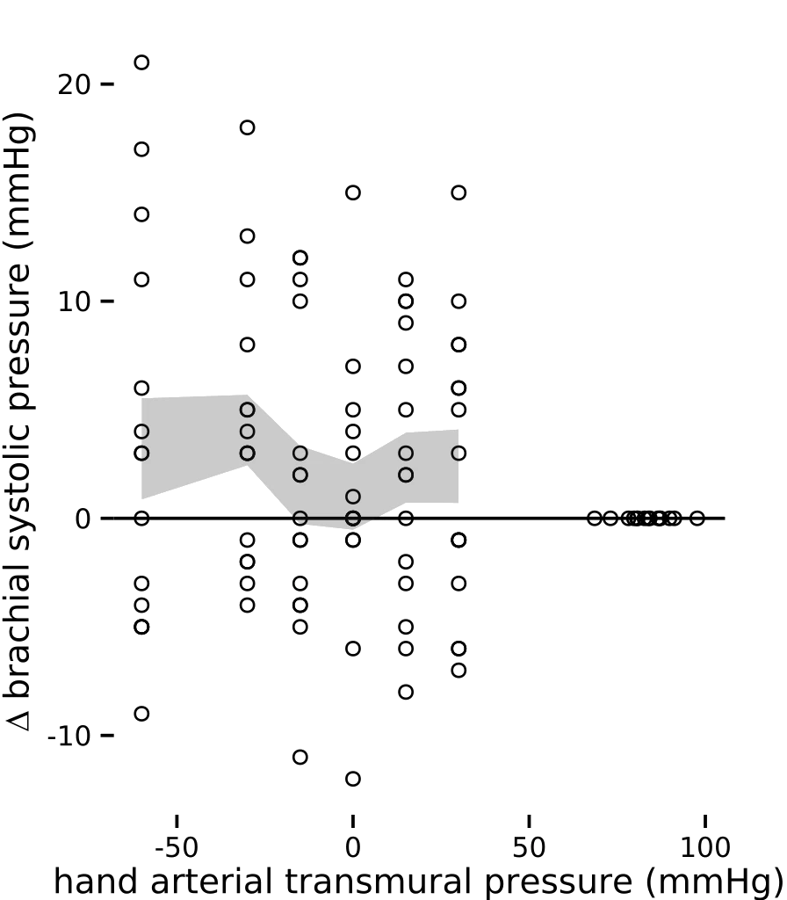 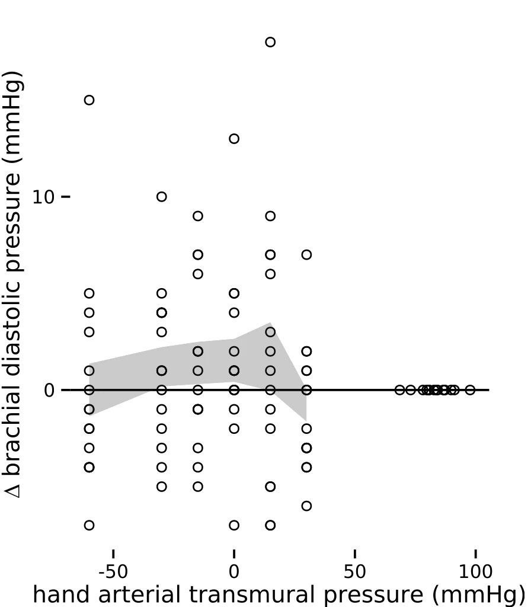 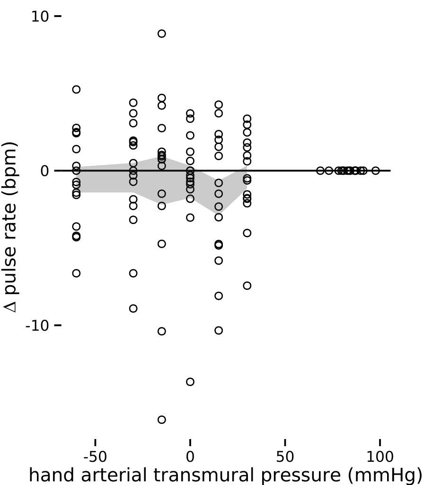 -- ### Results. Aortic diastolic blood pressure estimate #### No changes 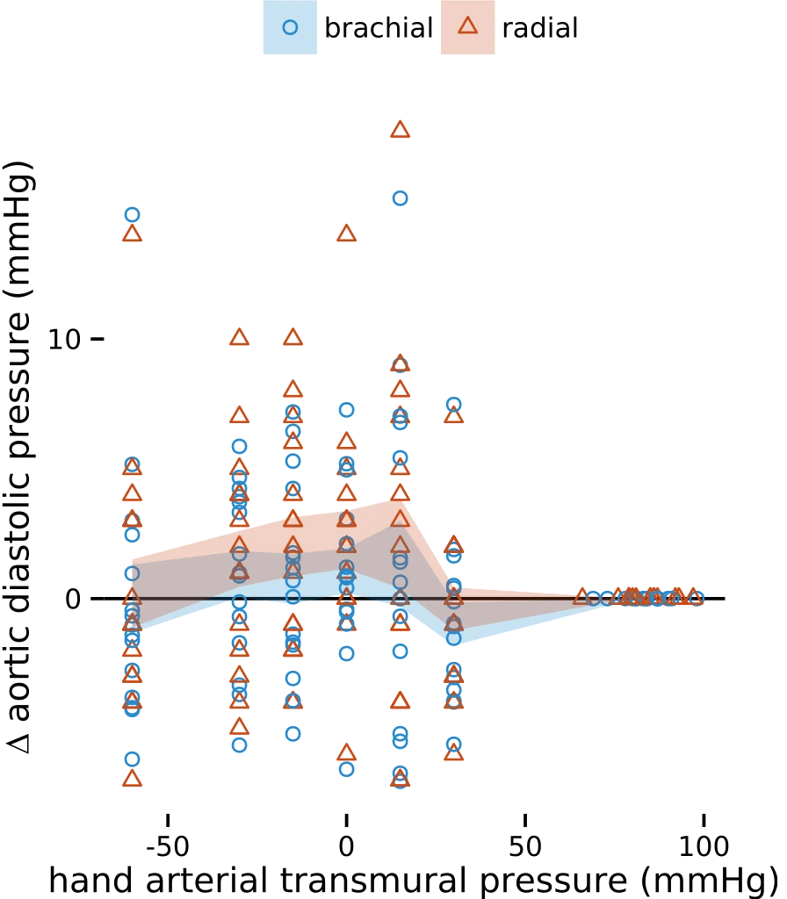 -- ### Results. Aortic systolic blood pressure estimate #### Differences when estimated from radial signal 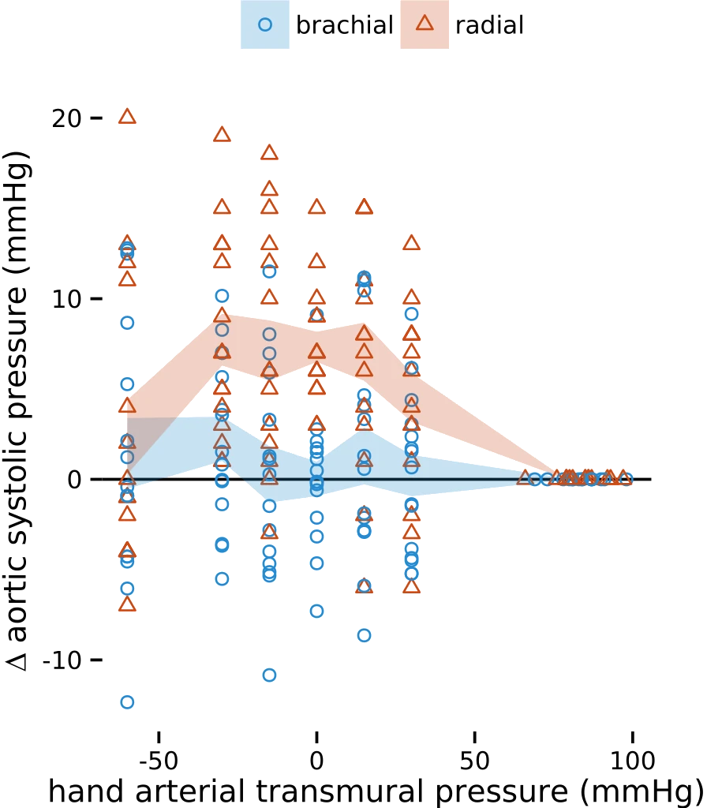 -- ### Results. Estimated aortic augmentation index #### Differences when estimated from radial signal 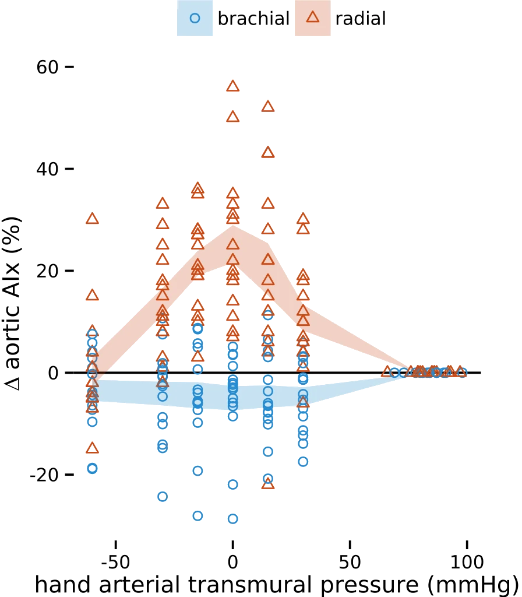 -- ### Results. Estimated ejection duration #### Minimal differences 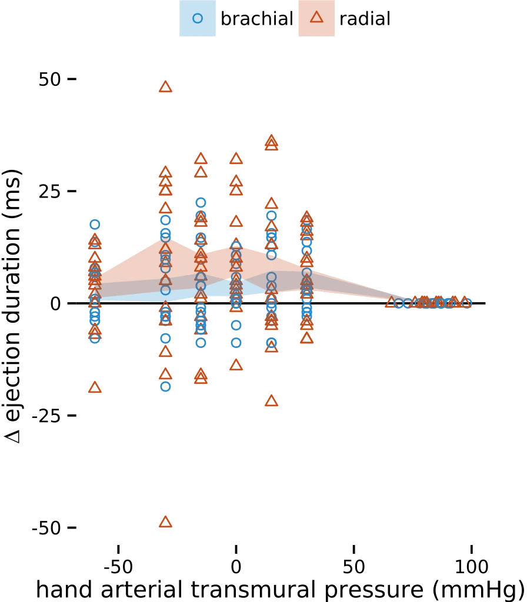 -- ### Can we use peripheral waveforms for aortic estimation with local peripheral (hand) vascular changes? #### <div class="container"> <div class="col"> brachial<br> <br> <ul> <li>aortic parameters robust with peripheral (hand) changes</li> <li>likely due to minimal effect on brachial waveform itself</li> </ul> </div> <div class="col"> radial<br> <br> <ul> <li>moderate effects on magnitude related parameters (aortic systolic pressure, augmentation index)</li> <li>no effect on time related parameter (ejection duration)</li> </ul> </div> </div> -- ### Brachial vs radial waveform #### Something to consider during the extremes <img src="images/pixlr_woman_hospital_winter.webp" width="33%"> <p class="citation"><a href="https:\\www.neurologyadvisor.com">www.neurologyadvisor.com</a><br> Generated by <a href="https://pixlr.com">pixlr.com</a></p> -- ### Brachial vs radial waveform #### Something to consider in cuffless blood pressure estimation <div class="container"> <div class="col"> <img src="images/pixlr_woman_hospital_winter.webp" width="75%"> <p class="citation">Generated by <a href="https://pixlr.com">pixlr.com</a></p> </div> <div class="col"> 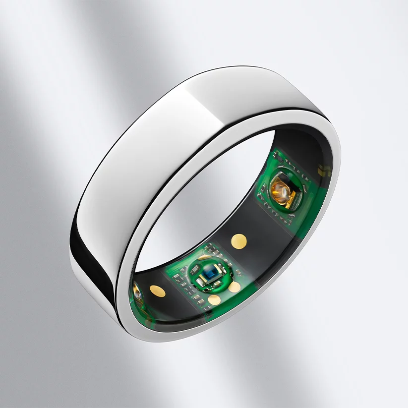 <img src="images/cuffless_bp_aktiia.jpg" width="48%"> <p class="citation">Oura ring. Aktiia watch.</p> </div> </div> -- <!-- .slide: data-auto-animate-restart --> # Comparison of effects of peripheral vasculature on tonometric radial pulse and cuff-based brachial pulse waveform as used in estimation of central aortic pressures ##### Mark Butlin, Isabella Tan, Ahmad Qasem, Alberto P Avolio <img src="images/BPAF_logo_and_name_black.webp" height="60px" align="left" style="padding-top:30px; padding-bottom:30px" alt="Blood Pressure and Arterial Function (BPAF) Laboratory logo"> <img src="images/logo_MQ_INT_HOR_RGB_POS.png" height="60px" align="right" alt="Macquarie University crest" style="padding-top:30px; padding-bottom:30px"> <p> </p> <p> </p> <p class="citation"> <br> <br>IEEE EMBS 2023<br>25th July 2023</p>